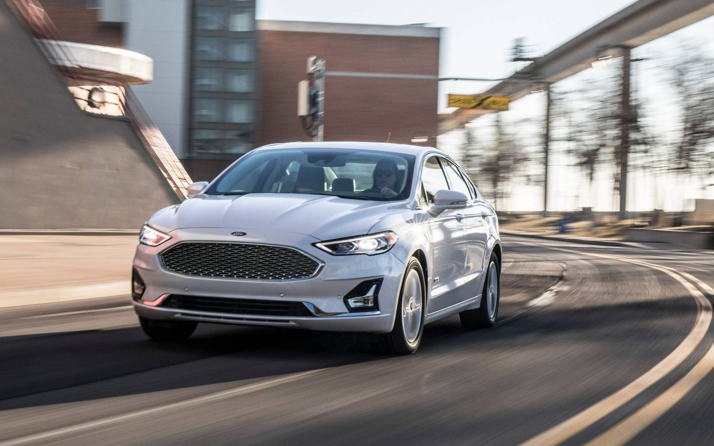

Le patron de Ford ouvre la porte à un retour des voitures.
Ayant éliminé tour à tour les Fiesta, Focus, Fusion et Taurus il y a plusieurs années, Ford ne compte plus qu’une seule voiture dans son catalogue nord-américain en ce moment : l’emblématique Mustang.

Le reste n’est que des VUS et des camionnettes. Est-ce une erreur? Il faut dire que les besoins et les préférences des consommateurs ont grandement changé. Comme nous l’avons mentionné dans notre article sur les ventes de véhicules neufs au Canada en 2025, la part de marché des voitures a chuté à un maigre 12,4%, un creux historique. Si Ford a abandonné la majorité des siennes, ce n’est pas tant par manque de popularité que par l’incapacité du constructeur à les vendre de manière rentable et à être compétitif face aux autres. C’est ce que le PDG Jim Farley a admis dans une récente entrevue pour le site Automotive News. Or, « le marché de la berline est très vibrant » et un retour de Ford n’est pas à exclure, a-t-il ajouté. C’est quand même ironique et étrange, car le même homme avait dit en 2024 que la compagnie ne voulait plus fabriquer des voitures ennuyantes et à la place se concentrer sur ses icônes – F-150, Mustang, Bronco, Explorer, etc. Les Fiesta et Focus ont cessé définitivement d’être commercialisées à l’échelle mondiale en 2023 et 2025, respectivement. Une berline intermédiaire continue d’être offerte en Chine sous le nom Mondeo et au Moyen-Orient sous le nom Taurus. Que faut-il conclure de cette nouvelle porte entrouverte par Farley? Peut-être que les rumeurs d’une Mustang à quatre portes sont plus fondées qu’on le pense. On en profite pour rappeler que Ford a déposé une demande au bureau américain des brevets et des marques de commerce en 2025 pour faire enregistrer le nom « Mach 4 ». Dans le contexte actuel des tarifs douaniers et des hausses des prix, l’abordabilité des véhicules devient de plus en plus un enjeu. Ford le reconnaît et travaille d’ailleurs sur une nouvelle génération de véhicules électriques plus accessibles, à commencer par une camionnette intermédiaire en 2027. Toutefois, de là à ramener sur le marché des produits dits économiques comme une Focus ou même une Fusion, il y a encore un énorme pas à franchir.